GAT 41–58 media review
222 formula images → LaTeX · 9 image tables → editable tables · 76 drawings → SVG/JSON · 14 originals retained. Every source graphic appears once below. Use the filters to skim one category.
image1 · formula · Assignment 41, I
Source preview · reference page 1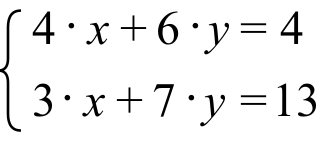
LaTeX candidateLaTeX source
\left\{ \begin{array}{l}4\cdot x+6\cdot y=4 \\ 3\cdot x+7\cdot y=13\end{array} \right.image2 · formula · Assignment 41, I
Source preview · reference page 1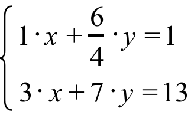
LaTeX candidateLaTeX source
\left\{ \begin{array}{l}1\cdot x+\frac{6}{4}\cdot y=1 \\ 3\cdot x+7\cdot y=13\end{array} \right.image3 · formula · Assignment 41, I
Source preview · reference page 1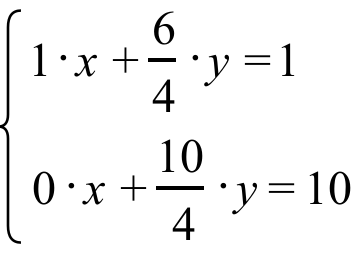
LaTeX candidateLaTeX source
\left\{ \begin{array}{l}1\cdot x+\frac{6}{4}\cdot y=1 \\ 0\cdot x+\frac{10}{4}\cdot y=10\end{array} \right.image4 · formula · Assignment 41, I
Source preview · reference page 1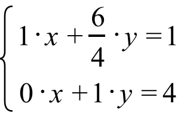
LaTeX candidateLaTeX source
\left\{ \begin{array}{l}1\cdot x+\frac{6}{4}\cdot y=1 \\ 0\cdot x+1\cdot y=4\end{array} \right.image5 · formula · Assignment 41, I
Source preview · reference page 1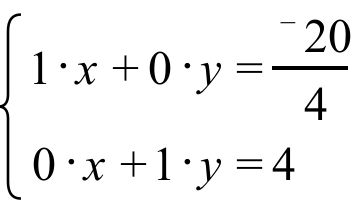
LaTeX candidateLaTeX source
\left\{ \begin{array}{l}1\cdot x+0\cdot y=\frac{{}^{-}20}{4} \\ 0\cdot x+1\cdot y=4\end{array} \right.image6 · formula · Assignment 41, I
Source preview · reference page 1 LaTeX candidate
LaTeX candidateLaTeX source
\frac{1}{4}image7 · formula · Assignment 41, I
Source preview · reference page 2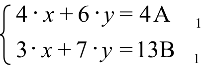
LaTeX candidateLaTeX source
\left\{ \begin{array}{l}4\cdot x+6\cdot y=4\hspace{1.0em}\text{A}_{\text{1}} \\ 3\cdot x+7\cdot y=13\hspace{0.75em}\text{B}_{\text{1}}\end{array} \right.image8 · formula · Assignment 41, I
Source preview · reference page 2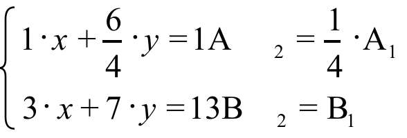
LaTeX candidateLaTeX source
\left\{ \begin{array}{l}1\cdot x+\frac{6}{4}\cdot y=1\hspace{1.25em}\text{A}_{\text{2}}=\frac{1}{4}\cdot \text{A}_{1} \\ 3\cdot x+7\cdot y=13\hspace{1.0em}\text{B}_{\text{2}}=\text{B}_{1}\end{array} \right.image9 · calculation flow · Assignment 41, I
Source preview · reference page 2 Drawing recovered as vectors
Drawing recovered as vectors SVG · Drawing JSON · Original file · Source PDF
SVG · Drawing JSON · Original file · Source PDFimage10 · formula · Assignment 41, I
Source preview · reference page 2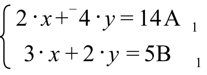
LaTeX candidateLaTeX source
\left\{ \begin{array}{l}2\cdot x+{}^{-}4\cdot y=14\hspace{0.5em}\text{A}_{\text{1}} \\ \text{ }3\cdot x+2\cdot y=5\hspace{1.0em}\text{B}_{\text{1}}\end{array} \right.image11 · formula · Assignment 41, I
Source preview · reference page 2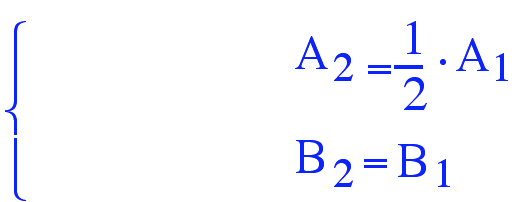
LaTeX candidateLaTeX source
\left\{\begin{array}{l}A_2=\frac12\cdot A_1 \\ B_2=B_1\end{array}\right.
image12 · formula · Assignment 41, I
Source preview · reference page 2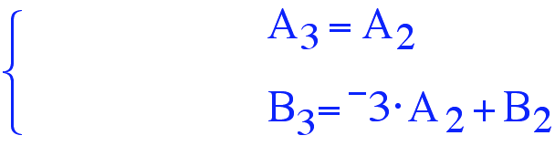
LaTeX candidateLaTeX source
\left\{\begin{array}{l}A_3=A_2 \\ B_3={}^{-}3\cdot A_2+B_2\end{array}\right.
image13 · formula · Assignment 41, I
Source preview · reference page 3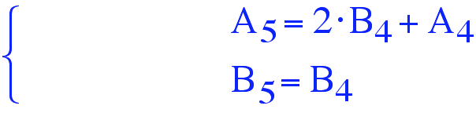
LaTeX candidateLaTeX source
\left\{\begin{array}{l}A_5=2\cdot B_4+A_4 \\ B_5=B_4\end{array}\right.
image14 · coordinate plot · Assignment 41, II
Source preview · reference page 3 Drawing recovered as vectors
Drawing recovered as vectors SVG · Drawing JSON · Original file · Source PDF
SVG · Drawing JSON · Original file · Source PDFimage15 · coordinate plot · Assignment 41, III
Source preview · reference page 3 Drawing recovered as vectors
Drawing recovered as vectors SVG · Drawing JSON · Original file · Source PDF
SVG · Drawing JSON · Original file · Source PDFimage16 · formula · Assignment 41, V
Source preview · reference page 4 LaTeX candidate
LaTeX candidateLaTeX source
\text{a}\cdot x+\text{b}\cdot y=\text{c}image17 · formula · Assignment 41, V
Source preview · reference page 4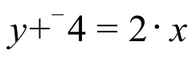
LaTeX candidateLaTeX source
y+{}^{-}4=2\cdot ximage18 · formula · Assignment 41, V
Source preview · reference page 4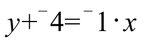
LaTeX candidateLaTeX source
y+{}^{-}4={}^{-}1\cdot ximage19 · formula · Assignment 41, VI
Source preview · reference page 4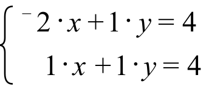
LaTeX candidateLaTeX source
\left\{ \begin{array}{l}{}^{-}2\cdot x+1\cdot y=4 \\ \hspace{0.75em}1\cdot x+1\cdot y=4\end{array} \right.image20 · formula · Assignment 41, VII
Source preview · reference page 4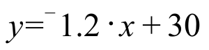
LaTeX candidateLaTeX source
y={}^{-}1\mathrm{.}2\cdot x+30image21 · formula · Assignment 41, IX
Source preview · reference page 4 LaTeX candidate
LaTeX candidateLaTeX source
y=\text{a}\cdot x+\text{b}image22 · formula · Assignment 41, IX
Source preview · reference page 4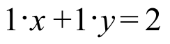
LaTeX candidateLaTeX source
1\cdot x+1\cdot y=2image23 · formula · Assignment 41, IX
Source preview · reference page 4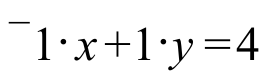
LaTeX candidateLaTeX source
{}^{-}1\cdot x+1\cdot y=4image24 · coordinate plot · Assignment 41, IX
Source preview · reference page 5 Drawing recovered as vectors
Drawing recovered as vectors SVG · Drawing JSON · Original file · Source PDF
SVG · Drawing JSON · Original file · Source PDFimage25 · formula · Assignment 41, IX
Source preview · reference page 5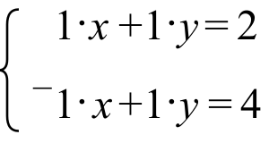
LaTeX candidateLaTeX source
\left\{ \begin{array}{l}\hspace{0.5em}1\cdot x+1\cdot y=2 \\ {}^{-}1\cdot x+1\cdot y=4\end{array} \right.image26 · formula · Assignment 42, I
Source preview · reference page 6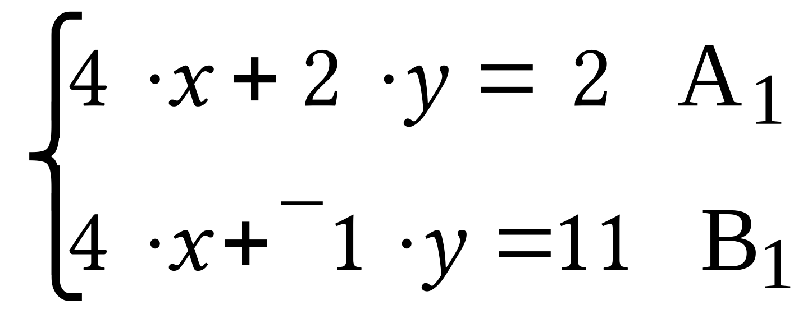
LaTeX candidateLaTeX source
\left\{ \begin{array}{l}4\cdot x+2\cdot y=\text{ }2\hspace{0.75em}\text{A}_{\text{1}} \\ 4\cdot x+{}^{-}1\cdot y=11\hspace{0.75em}\text{B}_{\text{1}}\end{array} \right.image27 · formula · Assignment 42, I
Source preview · reference page 6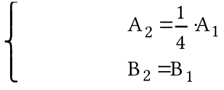
LaTeX candidateLaTeX source
\left\{\begin{array}{l}A_2=\frac14\cdot A_1 \\ B_2=B_1\end{array}\right.image28 · formula · Assignment 42, I
Source preview · reference page 6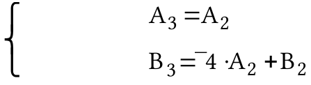
LaTeX candidateLaTeX source
\left\{\begin{array}{l}A_3=A_2 \\ B_3={}^{-}4\cdot A_2+B_2\end{array}\right.image29 · formula · Assignment 42, I
Source preview · reference page 6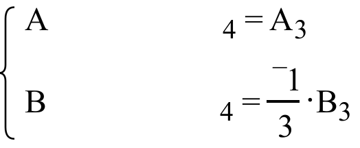
LaTeX candidateLaTeX source
\left\{ \begin{array}{l}\hspace{5.25em}\text{A}_{\text{4}}=\text{A}_{3} \\ \hspace{5.25em}\text{B}_{\text{4}}=\frac{{}^{-}1}{3}\cdot \text{B}_{\text{3}}\end{array} \right.image30 · formula · Assignment 42, I
Source preview · reference page 6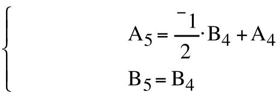
LaTeX candidateLaTeX source
\left\{\begin{array}{l}A_5=\frac{{}^{-}1}{2}\cdot B_4+A_4 \\ B_5=B_4\end{array}\right.image31 · formula · Assignment 42, I
Source preview · reference page 6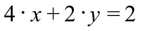
LaTeX candidateLaTeX source
4\cdot x+2\cdot y=2image32 · formula · Assignment 42, I
Source preview · reference page 6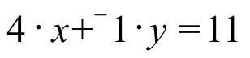
LaTeX candidateLaTeX source
4\cdot x+{}^{-}1\cdot y=11image33 · formula · Assignment 42, II
Source preview · reference page 6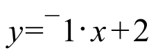
LaTeX candidateLaTeX source
y={}^{-}1\cdot x+2image34 · formula · Assignment 42, II
Source preview · reference page 6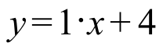
LaTeX candidateLaTeX source
y=1\cdot x+4image35 · screenshot · Assignment 42, II
Source preview · reference page 7 Original retainedOriginal retainedContains original raster artwork; retained as an image. Vector conversion is incomplete.
Original retainedOriginal retainedContains original raster artwork; retained as an image. Vector conversion is incomplete.Contains original raster artwork; retained as an image. Vector conversion is incomplete.
Original file · Source PDFimage36 · screenshot · Assignment 42, II
Source preview · reference page 7 Original retainedOriginal retainedContains original raster artwork; retained as an image. Vector conversion is incomplete.
Original retainedOriginal retainedContains original raster artwork; retained as an image. Vector conversion is incomplete.Contains original raster artwork; retained as an image. Vector conversion is incomplete.
Original file · Source PDFimage37 · formula · Assignment 42, II
Source preview · reference page 8 LaTeX candidate
LaTeX candidateLaTeX source
\left\{ \begin{array}{l}\text{a}\cdot x+\text{b}\cdot y=\text{c} \\ \text{d}\cdot x+\text{e}\cdot y=\text{f}\end{array} \right.image38 · formula · Assignment 42, II
Source preview · reference page 8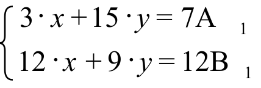
LaTeX candidateLaTeX source
\left\{ \begin{array}{l}3\cdot x+15\cdot y=7\hspace{0.75em}\text{A}_{\text{1}} \\ 12\cdot x+9\cdot y=12\hspace{0.5em}\text{B}_{\text{1}}\end{array} \right.image39 · formula · Assignment 42, II
Source preview · reference page 8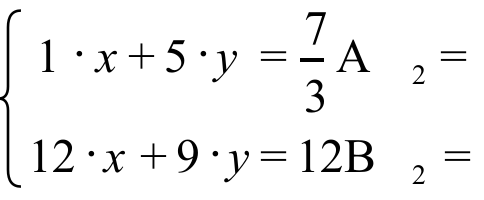
LaTeX candidateLaTeX source
\left\{ \begin{array}{l}\text{ 1}\cdot x+5\cdot y\text{ =}\frac{\text{7}}{\text{3}}\hspace{0.75em}\text{A}_{\text{2}}= \\ \text{12}\cdot x+9\cdot y=12\hspace{0.75em}\text{B}_{\text{2}}=\end{array} \right.image40 · formula · Assignment 42, II
Source preview · reference page 8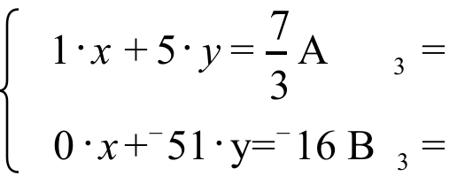
LaTeX candidateLaTeX source
\left\{ \begin{array}{l}\hspace{0.5em}1\cdot x+5\cdot y=\frac{7}{3}\hspace{1.5em}\text{A}_{\text{3}}= \\ \hspace{0.5em}0\cdot x+{}^{-}\text{51}\cdot \text{y=}{}^{-}\text{16}\hspace{0.75em}\text{B}_{\text{3}}=\end{array} \right.image41 · formula · Assignment 42, II
Source preview · reference page 8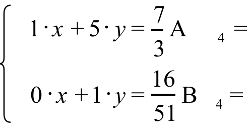
LaTeX candidateLaTeX source
\left\{ \begin{array}{l}\hspace{0.5em}1\cdot x+5\cdot y=\frac{7}{3}\hspace{1.25em}\text{A}_{\text{4}}= \\ \hspace{0.5em}0\cdot x+1\cdot y=\frac{16}{51}\hspace{0.75em}\text{B}_{\text{4}}=\end{array} \right.image42 · formula · Assignment 42, II
Source preview · reference page 8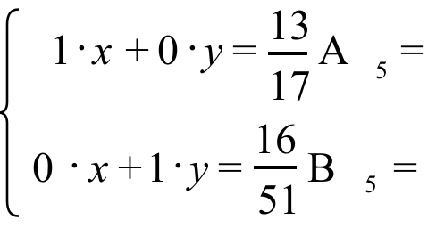
LaTeX candidateLaTeX source
\left\{ \begin{array}{l}\hspace{0.5em}1\cdot x+0\cdot y=\frac{13}{17}\hspace{0.5em}\text{A}_{\text{5}}= \\ \text{ 0}\cdot x\text{+}1\cdot y\text{=}\frac{\text{16}}{\text{51}}\hspace{0.75em}\text{B}_{\text{5}}=\end{array} \right.image43 · formula · Assignment 42, II
Source preview · reference page 8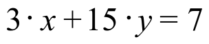
LaTeX candidateLaTeX source
3\cdot x+15\cdot y=7image44 · formula · Assignment 42, II
Source preview · reference page 8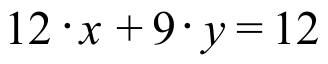
LaTeX candidateLaTeX source
12\cdot x+9\cdot y=12image45 · coordinate plot · Assignment 42, III
Source preview · reference page 9 Drawing recovered as vectors
Drawing recovered as vectors SVG · Drawing JSON · Original file · Source PDF
SVG · Drawing JSON · Original file · Source PDFimage46 · formula · Assignment 42, IV
Source preview · reference page 9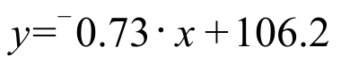
LaTeX candidateLaTeX source
y={}^{-}0\mathrm{.}73\cdot x+106\mathrm{.}2image47 · coordinate plot · Assignment 42, V
Source preview · reference page 9 Drawing recovered as vectors
Drawing recovered as vectors SVG · Drawing JSON · Original file · Source PDF
SVG · Drawing JSON · Original file · Source PDFimage48 · formula · Assignment 42, VI
Source preview · reference page 9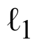
LaTeX candidateLaTeX source
\ell _{1}image49 · formula · Assignment 42, VI
Source preview · reference page 9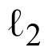
LaTeX candidateLaTeX source
\ell _{2}image50 · formula · Assignment 42, VII
Source preview · reference page 9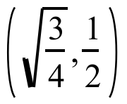
LaTeX candidateLaTeX source
\left( \sqrt{\frac{3}{4}}\mathrm{,}\frac{1}{2} \right)image51 · formula · Assignment 42, VII
Source preview · reference page 9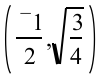
LaTeX candidateLaTeX source
\left( \frac{{}^{-}1}{2}\mathrm{,}\sqrt{\frac{3}{4}} \right)image52 · formula · Assignment 42, VII
Source preview · reference page 9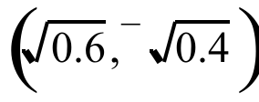
LaTeX candidateLaTeX source
\left( \sqrt{0\mathrm{.}6}\mathrm{,}{}^{-}\sqrt{0\mathrm{.}4} \right)image53 · formula · Assignment 42, IX
Source preview · reference page 10LaTeX candidateLaTeX source
\times image54 · formula · Assignment 42, IX
Source preview · reference page 10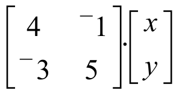
LaTeX candidateLaTeX source
\left[ \begin{matrix}4 & {}^{-}1 \\ {}^{-}3 & 5\end{matrix} \right]\cdot \left[ \begin{matrix}x \\ y\end{matrix} \right]image55 · formula · Assignment 43, I
Source preview · reference page 11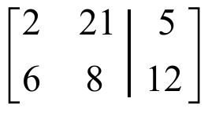
LaTeX candidateLaTeX source
\left[ \begin{array}{cc|c}2 & 21 & 5 \\ 6 & 8 & 12\end{array} \right]image56 · formula · Assignment 43, I
Source preview · reference page 11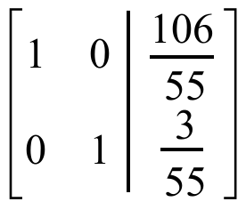
LaTeX candidateLaTeX source
\left[ \begin{array}{cc|c}1 & 0 & \frac{106}{55} \\ 0 & 1 & \frac{3}{55}\end{array} \right]image57 · formula · Assignment 43, I
Source preview · reference page 11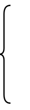
LaTeX candidateLaTeX source
\left\{ \begin{array}{l}\text{ } \\ \text{ } \\ \text{ }\end{array} \right.image58 · formula · Assignment 43, II
Source preview · reference page 11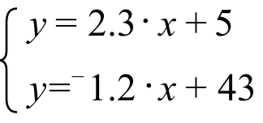
LaTeX candidateLaTeX source
\left\{ \begin{array}{l}y=2\mathrm{.}3\cdot x+5 \\ y={}^{-}1\mathrm{.}2\cdot x+43\end{array} \right.image59 · formula · Assignment 43, III
Source preview · reference page 11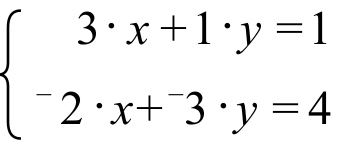
LaTeX candidateLaTeX source
\left\{ \begin{array}{l}\hspace{0.75em}3\cdot x+1\cdot y=1 \\ {}^{-}2\cdot x+{}^{-}3\cdot y=4\end{array} \right.image60 · formula · Assignment 43, IV
Source preview · reference page 12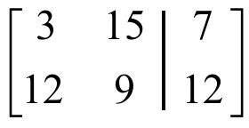
LaTeX candidateLaTeX source
\left[ \begin{array}{cc|c}3 & 15 & 7 \\ 12 & 9 & 12\end{array} \right]image61 · formula · Assignment 43, IV
Source preview · reference page 12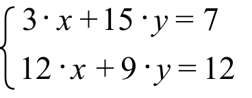
LaTeX candidateLaTeX source
\left\{ \begin{array}{l}3\cdot x+15\cdot y=7\hspace{0.75em} \\ 12\cdot x+9\cdot y=12\text{ }\end{array} \right.image62 · formula · Assignment 43, IV
Source preview · reference page 12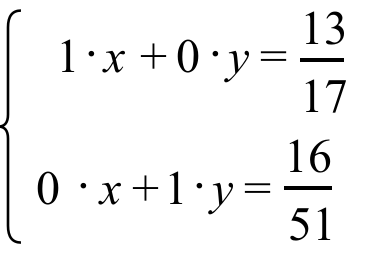
LaTeX candidateLaTeX source
\left\{ \begin{array}{l}\hspace{0.5em}1\cdot x+0\cdot y=\frac{13}{17}\hspace{0.5em} \\ \text{ 0}\cdot x\text{+1}\cdot y\text{=}\frac{\text{16}}{\text{51}}\hspace{0.5em}\end{array} \right.image63 · formula · Assignment 43, IV
Source preview · reference page 12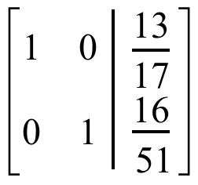
LaTeX candidateLaTeX source
\left[ \begin{array}{cc|c}1 & 0 & \frac{13}{17} \\ 0 & 1 & \frac{16}{51}\end{array} \right]image64 · formula · Assignment 43, IV
Source preview · reference page 12LaTeX candidateLaTeX source
\left[ \begin{matrix}3 & 15 \\ 12 & 9\end{matrix} \right]image65 · formula · Assignment 43, IV
Source preview · reference page 12LaTeX candidateLaTeX source
\left[ \begin{matrix}7 \\ 12\end{matrix} \right]image66 · screenshot · Assignment 43, IV
Source preview · reference page 12 Original retainedOriginal retainedContains original raster artwork; retained as an image. Vector conversion is incomplete.
Original retainedOriginal retainedContains original raster artwork; retained as an image. Vector conversion is incomplete.Contains original raster artwork; retained as an image. Vector conversion is incomplete.
Original file · Source PDFimage67 · formula · Assignment 43, IV
Source preview · reference page 12LaTeX candidateLaTeX source
\text{A}_{\text{2}}=\frac{\text{1}}{\text{3}}\cdot \text{A}_{\text{1}}image68 · formula · Assignment 43, IV
Source preview · reference page 12LaTeX candidateLaTeX source
\text{B}_{\text{2}}=\text{B}_{\text{1}}image69 · screenshot · Assignment 43, IV
Source preview · reference page 13 Original retainedOriginal retainedContains original raster artwork; retained as an image. Vector conversion is incomplete.
Original retainedOriginal retainedContains original raster artwork; retained as an image. Vector conversion is incomplete.Contains original raster artwork; retained as an image. Vector conversion is incomplete.
Original file · Source PDFimage70 · formula · Assignment 43, IV
Source preview · reference page 13LaTeX candidateLaTeX source
\frac{7}{3}image71 · formula · Assignment 43, IV
Source preview · reference page 13LaTeX candidateLaTeX source
\text{A}_{\text{3}}=\text{A}_{\text{2}}image72 · formula · Assignment 43, IV
Source preview · reference page 13LaTeX candidateLaTeX source
\text{B}_{\text{3}}={}^{-}\text{12}\cdot \text{A}_{\text{2}}+\text{B}_{\text{2}}image73 · screenshot · Assignment 43, IV
Source preview · reference page 13 Original retainedOriginal retainedContains original raster artwork; retained as an image. Vector conversion is incomplete.
Original retainedOriginal retainedContains original raster artwork; retained as an image. Vector conversion is incomplete.Contains original raster artwork; retained as an image. Vector conversion is incomplete.
Original file · Source PDFimage74 · screenshot · Assignment 43, IV
Source preview · reference page 13 Original retainedOriginal retainedContains original raster artwork; retained as an image. Vector conversion is incomplete.
Original retainedOriginal retainedContains original raster artwork; retained as an image. Vector conversion is incomplete.Contains original raster artwork; retained as an image. Vector conversion is incomplete.
Original file · Source PDFimage75 · screenshot · Assignment 43, IV
Source preview · reference page 13 Original retainedOriginal retainedContains original raster artwork; retained as an image. Vector conversion is incomplete.
Original retainedOriginal retainedContains original raster artwork; retained as an image. Vector conversion is incomplete.Contains original raster artwork; retained as an image. Vector conversion is incomplete.
Original file · Source PDFimage76 · screenshot · Assignment 43, IV
Source preview · reference page 13 Original retainedOriginal retainedContains original raster artwork; retained as an image. Vector conversion is incomplete.
Original retainedOriginal retainedContains original raster artwork; retained as an image. Vector conversion is incomplete.Contains original raster artwork; retained as an image. Vector conversion is incomplete.
Original file · Source PDFimage77 · formula · Assignment 43, IV
Source preview · reference page 13LaTeX candidateLaTeX source
\left( \frac{13}{17}\mathrm{,}\frac{16}{51} \right)image78 · formula · Assignment 43, IV
Source preview · reference page 14LaTeX candidateLaTeX source
\left[\begin{array}{cc|c}3 & 1 & 1 \\ {}^{-}2 & {}^{-}3 & 4\end{array}\right]\quad\begin{array}{l}A_1 \\ B_1\end{array}image79 · formula · Assignment 43, IV
Source preview · reference page 14LaTeX candidateLaTeX source
\left[\begin{array}{cc|c}\phantom{00} & \phantom{00} & \phantom{00} \\ \phantom{00} & \phantom{00} & \phantom{00}\end{array}\right]\quad\begin{array}{l}A_2=\frac13\cdot A_1 \\ B_2=B_1\end{array}image80 · formula · Assignment 43, IV
Source preview · reference page 14LaTeX candidateLaTeX source
\left[\begin{array}{cc|c}\phantom{00} & \phantom{00} & \phantom{00} \\ \phantom{00} & \phantom{00} & \phantom{00}\end{array}\right]\quad\begin{array}{l}A_3=A_2 \\ B_3=2\cdot A_2+B_2\end{array}image81 · formula · Assignment 43, IV
Source preview · reference page 14LaTeX candidateLaTeX source
\left[\begin{array}{cc|c}\phantom{00} & \phantom{00} & \phantom{00} \\ \phantom{00} & \phantom{00} & \phantom{00}\end{array}\right]\quad\begin{array}{l}A_4=A_3 \\ B_4=\frac{{}^{-}3}{7}\cdot B_3\end{array}image82 · formula · Assignment 43, IV
Source preview · reference page 14LaTeX candidateLaTeX source
\left[\begin{array}{cc|c}\phantom{00} & \phantom{00} & \phantom{00} \\ \phantom{00} & \phantom{00} & \phantom{00}\end{array}\right]\quad\begin{array}{l}A_5=\frac{{}^{-}1}{3}\cdot B_4+A_4 \\ B_5=B_4\end{array}image83 · formula · Assignment 43, V
Source preview · reference page 14LaTeX candidateLaTeX source
\left\{ \begin{array}{l}9\cdot x+11\cdot y\hspace{0.5em}=3\hspace{0.75em}\text{A}_{\text{1}} \\ 17\cdot x+11\cdot y=11\hspace{0.5em}\text{B}_{\text{1}}\end{array} \right.image84 · formula · Assignment 43, V
Source preview · reference page 14LaTeX candidateLaTeX source
\left\{ \begin{array}{l}\text{ 1}\cdot x+\frac{11}{9}\cdot y\text{ =}\frac{\text{1}}{\text{3}}\hspace{1.25em}\text{A}_{\text{2}}= \\ \text{17}\cdot x+11\cdot y=11\hspace{1.5em}\text{B}_{\text{2}}=\end{array} \right.image85 · formula · Assignment 43, V
Source preview · reference page 14LaTeX candidateLaTeX source
\left\{ \begin{array}{l}\hspace{1.5em}1\cdot x+\frac{11}{9}\cdot y=\frac{1}{3}\hspace{0.75em}\text{A}_{\text{3}}= \\ \hspace{0.5em}0\cdot x+\frac{{}^{-}88}{9}\cdot \text{y=}\frac{\text{16}}{\text{3}}\hspace{0.75em}\text{B}_{\text{3}}=\end{array} \right.image86 · formula · Assignment 43, V
Source preview · reference page 14LaTeX candidateLaTeX source
\left\{ \begin{array}{l}\hspace{0.5em}1\cdot x+\frac{11}{9}\cdot y=\frac{1}{3}\hspace{0.5em}\text{A}_{\text{4}}= \\ \hspace{0.5em}0\cdot x+1\cdot y=\frac{{}^{-}6}{11}\hspace{0.75em}\text{B}_{\text{4}}=\end{array} \right.image87 · formula · Assignment 43, V
Source preview · reference page 14LaTeX candidateLaTeX source
\left\{ \begin{array}{l}\hspace{0.5em}1\cdot x+0\cdot y=1\hspace{1.25em}\text{A}_{\text{5}}= \\ \text{ 0}\cdot x\text{+}1\cdot y\text{=}\frac{{}^{-}6}{\text{11}}\hspace{0.75em}\text{B}_{\text{5}}=\end{array} \right.image88 · formula · Assignment 43, VII
Source preview · reference page 15LaTeX candidateLaTeX source
y={}^{-}0\mathrm{.}51x+121\mathrm{.}2image89 · formula · Assignment 43, VIII
Source preview · reference page 15LaTeX candidateLaTeX source
\left[ \begin{matrix}1 & 0\mathrm{.}4 \\ 0 & 1\end{matrix} \right]\cdot \left[ \begin{matrix}1 & 0 \\ 0 & 1\end{matrix} \right]image90 · formula · Assignment 43, VIII
Source preview · reference page 15LaTeX candidateLaTeX source
\left[ \begin{matrix}1 & 0\mathrm{.}4 \\ 0 & 1\end{matrix} \right]image91 · formula · Assignment 44, I
Source preview · reference page 16LaTeX candidateLaTeX source
\left\{ \begin{array}{l}\text{ }1\text{4}\cdot x+21\cdot y={}^{-}17 \\ \hspace{0.5em}20\cdot x+6\cdot y=8\end{array} \right.image92 · formula · Assignment 44, II
Source preview · reference page 16LaTeX candidateLaTeX source
\left[\begin{array}{cc|c}14 & 21 & {}^{-}17 \\ 20 & 6 & 8\end{array}\right]\quad\begin{array}{l}A_1 \\ B_1\end{array}image93 · formula · Assignment 44, II
Source preview · reference page 16LaTeX candidateLaTeX source
\left[\begin{array}{cc|c}\phantom{00} & \phantom{00} & \phantom{00} \\ \phantom{00} & \phantom{00} & \phantom{00}\end{array}\right]\quad\begin{array}{l}A_2=\frac1{14}\cdot A_1 \\ B_2=B_1\end{array}image94 · formula · Assignment 44, II
Source preview · reference page 16LaTeX candidateLaTeX source
\left[\begin{array}{cc|c}\phantom{00} & \phantom{00} & \phantom{00} \\ \phantom{00} & \phantom{00} & \phantom{00}\end{array}\right]\quad\begin{array}{l}A_3=A_2 \\ B_3={}^{-}20\cdot A_2+B_2\end{array}image95 · formula · Assignment 44, II
Source preview · reference page 16LaTeX candidateLaTeX source
\left[\begin{array}{cc|c}\phantom{00} & \phantom{00} & \phantom{00} \\ \phantom{00} & \phantom{00} & \phantom{00}\end{array}\right]\quad\begin{array}{l}A_4=A_3 \\ B_4=\frac{{}^{-}1}{24}\cdot B_3\end{array}image96 · formula · Assignment 44, II
Source preview · reference page 16LaTeX candidateLaTeX source
\left[\begin{array}{cc|c}\phantom{00} & \phantom{00} & \phantom{00} \\ \phantom{00} & \phantom{00} & \phantom{00}\end{array}\right]\quad\begin{array}{l}A_5=\frac{{}^{-}3}{2}\cdot B_4+A_4 \\ B_5=B_4\end{array}image97 · formula · Assignment 44, III
Source preview · reference page 16LaTeX candidateLaTeX source
\left\{ \begin{array}{l}13x+11y=21 \\ 17x+1y=10\end{array} \right.image98 · formula · Assignment 44, III
Source preview · reference page 17LaTeX candidateLaTeX source
\begin{array}{l}1 \\ 0\end{array}image99 · formula · Assignment 44, III
Source preview · reference page 17LaTeX candidateLaTeX source
\begin{array}{l}0 \\ 1\end{array}image100 · formula · Assignment 44, IV
Source preview · reference page 17LaTeX candidateLaTeX source
\left[ \begin{matrix}1 & 0 \\ 0 & 1\end{matrix} \right]image101 · formula · Assignment 44, IV
Source preview · reference page 17LaTeX candidateLaTeX source
\text{M}\cdot \left[ \begin{matrix}1 & 0 \\ 0 & 1\end{matrix} \right]=\left[ \begin{matrix}\text{a} & \text{c} \\ \text{b} & \text{d}\end{matrix} \right]image102 · formula · Assignment 44, IV
Source preview · reference page 17LaTeX candidateLaTeX source
\times image103 · formula · Assignment 44, IV
Source preview · reference page 17LaTeX candidateLaTeX source
\left[ \begin{matrix}\text{a} \\ \text{b}\end{matrix} \right]image104 · formula · Assignment 44, IV
Source preview · reference page 17LaTeX candidateLaTeX source
\left[ \begin{matrix}\text{c} \\ \text{d}\end{matrix} \right]image105 · formula · Assignment 44, IV
Source preview · reference page 18LaTeX candidateLaTeX source
\left( \frac{1}{2}\mathrm{,}\frac{\sqrt{3}}{2} \right)image106 · formula · Assignment 44, IV
Source preview · reference page 18LaTeX candidateLaTeX source
\left( \frac{{}^{-}\sqrt{3}}{2}\mathrm{,}\frac{1}{2} \right)image107 · coordinate plot · Assignment 44, V
Source preview · reference page 18 Drawing recovered as vectors
Drawing recovered as vectors SVG · Drawing JSON · Original file · Source PDF
SVG · Drawing JSON · Original file · Source PDFimage108 · formula · Assignment 44, VI
Source preview · reference page 18LaTeX candidateLaTeX source
\left\{ \begin{array}{l}y=\frac{1}{5}\cdot x \\ \mathrm{(}y+{}^{-}5\mathrm{)}={}^{-}5\cdot \mathrm{(}x+{}^{-}4\mathrm{)}\end{array} \right.image109 · table · Assignment 44, VII
Source preview · reference page 19 Image → editable table800 meter run for menyear in which Olympic record was setrecord in seconds1948109.21956107.71960106.31964105.11976103.51984103.0SVG · Drawing JSON · Structured data · Original file · Source PDF
Image → editable table800 meter run for menyear in which Olympic record was setrecord in seconds1948109.21956107.71960106.31964105.11976103.51984103.0SVG · Drawing JSON · Structured data · Original file · Source PDF
image110 · table · Assignment 44, VIII
Source preview · reference page 19 Image → editable table800 meter run for womenyear in which world record was setrecord in seconds1953127.31960124.11964121.51968120.51971118.31983113.28SVG · Drawing JSON · Structured data · Original file · Source PDF
Image → editable table800 meter run for womenyear in which world record was setrecord in seconds1953127.31960124.11964121.51968120.51971118.31983113.28SVG · Drawing JSON · Structured data · Original file · Source PDF
image111 · coordinate plot · Assignment 45, I
Source preview · reference page 21 Drawing recovered as vectors
Drawing recovered as vectors SVG · Drawing JSON · Original file · Source PDF
SVG · Drawing JSON · Original file · Source PDFimage112 · formula · Assignment 45, I
Source preview · reference page 21LaTeX candidateLaTeX source
\text{Area}=\frac{\text{1}}{\text{2}}\cdot \text{the length of a base}\cdot \text{the length of an altitude to that base.}image113 · formula · Assignment 45, I
Source preview · reference page 21LaTeX candidateLaTeX source
\sqrt{10^{2}+2^{2}}image114 · formula · Assignment 45, I
Source preview · reference page 21LaTeX candidateLaTeX source
\mathrm{(}y+{}^{-}5\mathrm{)}=\frac{{}^{-}10}{2}\cdot \mathrm{(}x+{}^{-}4\mathrm{)}image115 · formula · Assignment 45, I
Source preview · reference page 22LaTeX candidateLaTeX source
\left\{ \begin{array}{l}\mathrm{(}y+{}^{-}5\mathrm{)}\text{ }={}^{-}5\cdot \mathrm{(}x+{}^{-}4\mathrm{)} \\ \hspace{2.5em}y=\frac{1}{5}\cdot x\end{array} \right.image116 · formula · Assignment 45, I
Source preview · reference page 22LaTeX candidateLaTeX source
\left\{ \begin{array}{l}5\cdot x+1\cdot y=25 \\ \frac{{}^{-}1}{5}\cdot x+1\cdot y=0\end{array} \right.image117 · formula · Assignment 45, I
Source preview · reference page 22LaTeX candidateLaTeX source
\left[ \begin{matrix}5 & 1 \\ \frac{{}^{-}1}{5} & 1\end{matrix} \right]image118 · formula · Assignment 45, I
Source preview · reference page 22LaTeX candidateLaTeX source
\left[ \begin{matrix}25 \\ 0\end{matrix} \right]image119 · formula · Assignment 45, I
Source preview · reference page 22LaTeX candidateLaTeX source
\left( \frac{125}{26}\mathrm{,}\frac{25}{26} \right)image120 · coordinate plot · Assignment 45, I
Source preview · reference page 22 Drawing recovered as vectors
Drawing recovered as vectors SVG · Drawing JSON · Original file · Source PDF
SVG · Drawing JSON · Original file · Source PDFimage121 · formula · Assignment 45, II
Source preview · reference page 23LaTeX candidateLaTeX source
\left( \sqrt{\frac{1}{2}}\mathrm{,}{}^{-}\sqrt{\frac{1}{2}} \right)image122 · formula · Assignment 45, II
Source preview · reference page 23LaTeX candidateLaTeX source
\left( {}^{-}\sqrt{0\mathrm{.}57}\mathrm{,}\sqrt{0\mathrm{.}43} \right)image123 · coordinate plot · Assignment 45, III
Source preview · reference page 23 Drawing recovered as vectors
Drawing recovered as vectors SVG · Drawing JSON · Original file · Source PDF
SVG · Drawing JSON · Original file · Source PDFimage124 · rotation · Assignment 45, V
Source preview · reference page 24 Drawing recovered as vectors
Drawing recovered as vectors SVG · Drawing JSON · Original file · Source PDF
SVG · Drawing JSON · Original file · Source PDFimage125 · coordinate plot · Assignment 45, V
Source preview · reference page 24 Drawing recovered as vectors
Drawing recovered as vectors SVG · Drawing JSON · Original file · Source PDF
SVG · Drawing JSON · Original file · Source PDFimage126 · formula · Assignment 45, VI
Source preview · reference page 25LaTeX candidateLaTeX source
x^{2}=4image127 · formula · Assignment 45, VI
Source preview · reference page 25LaTeX candidateLaTeX source
x^{2}+y^{2}=1image128 · coordinate plot · Assignment 45, VII
Source preview · reference page 25 Drawing recovered as vectors
Drawing recovered as vectors SVG · Drawing JSON · Original file · Source PDF
SVG · Drawing JSON · Original file · Source PDFimage129 · formula · Assignment 45, VIII
Source preview · reference page 25LaTeX candidateLaTeX source
\left( \frac{\sqrt{2}}{2}\mathrm{,}\frac{\sqrt{2}}{2} \right)image130 · formula · Assignment 45, VIII
Source preview · reference page 25LaTeX candidateLaTeX source
\left( \frac{{}^{-}\sqrt{2}}{2}\mathrm{,}\frac{\sqrt{2}}{2} \right)image131 · dilation · Assignment 45, IX
Source preview · reference page 26 Drawing recovered as vectors
Drawing recovered as vectors SVG · Drawing JSON · Original file · Source PDF
SVG · Drawing JSON · Original file · Source PDFimage132 · coordinate plot · Assignment 46, I
Source preview · reference page 27 Drawing recovered as vectors
Drawing recovered as vectors SVG · Drawing JSON · Original file · Source PDF
SVG · Drawing JSON · Original file · Source PDFimage133 · formula · Assignment 46, II
Source preview · reference page 27LaTeX candidateLaTeX source
\left( \frac{{}^{-}1}{2}\mathrm{,}\frac{{}^{-}\sqrt{3}}{2} \right)image134 · coordinate plot · Assignment 46, III
Source preview · reference page 28 Drawing recovered as vectors
Drawing recovered as vectors SVG · Drawing JSON · Original file · Source PDF
SVG · Drawing JSON · Original file · Source PDFimage135 · formula · Assignment 46, IV
Source preview · reference page 28LaTeX candidateLaTeX source
y^{2}=1-x^{2}image136 · formula · Assignment 46, IV
Source preview · reference page 28LaTeX candidateLaTeX source
\sqrt{\text{ }}\mathrm{(}1-\text{X}^{2}\mathrm{)}image137 · formula · Assignment 46, IV
Source preview · reference page 28LaTeX candidateLaTeX source
{}^{-}\sqrt{\text{ }}\mathrm{(}1-\text{X}^{2}\mathrm{)}image138 · formula · Assignment 46, IV
Source preview · reference page 28LaTeX candidateLaTeX source
x-\text{axis}image139 · formula · Assignment 46, V
Source preview · reference page 29LaTeX candidateLaTeX source
\mathrm{(}{}^{-}\sqrt{0\mathrm{.}7}\mathrm{,}\sqrt{0\mathrm{.}3}\mathrm{)}image140 · formula · Assignment 46, V
Source preview · reference page 29LaTeX candidateLaTeX source
\sqrt{1^{2}+0^{2}}=\sqrt{1}=1image141 · formula · Assignment 46, V
Source preview · reference page 29LaTeX candidateLaTeX source
\sqrt{\mathrm{(cos(}{}^{-}130^{\text{o}}\mathrm{))}^{2}+\mathrm{(sin(}{}^{-}130^{\text{o}}\mathrm{))}^{2}}=1image142 · formula · Assignment 46, V
Source preview · reference page 29LaTeX candidateLaTeX source
x^{2}+y^{2}=1image143 · coordinate plot · Assignment 46, V
Source preview · reference page 30 Drawing recovered as vectors
Drawing recovered as vectors SVG · Drawing JSON · Original file · Source PDF
SVG · Drawing JSON · Original file · Source PDFimage144 · formula · Assignment 46, V
Source preview · reference page 30LaTeX candidateLaTeX source
\text{a}^{\text{2}}+\text{b}^{\text{2}}image145 · formula · Assignment 46, V
Source preview · reference page 30LaTeX candidateLaTeX source
\text{e}^{\text{2}}+\text{f }^{\text{2}}image146 · coordinate plot · Assignment 46, VI
Source preview · reference page 30 Drawing recovered as vectors
Drawing recovered as vectors SVG · Drawing JSON · Original file · Source PDF
SVG · Drawing JSON · Original file · Source PDFimage147 · formula · Assignment 46, VI
Source preview · reference page 30 LaTeX candidate
LaTeX candidateLaTeX source
\ell image148 · formula · Assignment 46, VI
Source preview · reference page 31LaTeX candidateLaTeX source
\text{a}^{\text{2}}+\text{a}^{\text{2}}=\text{1}image149 · formula · Assignment 46, VII
Source preview · reference page 31LaTeX candidateLaTeX source
\sqrt{\frac{1}{2}}image150 · formula · Assignment 46, VII
Source preview · reference page 31LaTeX candidateLaTeX source
\frac{1}{\sqrt{2}}image151 · formula · Assignment 46, VII
Source preview · reference page 31LaTeX candidateLaTeX source
\frac{1}{\sqrt{2}}\cdot \frac{\sqrt{2}}{\sqrt{2}}image152 · formula · Assignment 46, VII
Source preview · reference page 31LaTeX candidateLaTeX source
\sqrt{\text{ }}image153 · coordinate plot · Assignment 47, I
Source preview · reference page 32 Drawing recovered as vectors
Drawing recovered as vectors SVG · Drawing JSON · Original file · Source PDF
SVG · Drawing JSON · Original file · Source PDFimage154 · formula · Assignment 47, II
Source preview · reference page 32LaTeX candidateLaTeX source
\left( \frac{\sqrt{3}}{2}\mathrm{,}\frac{1}{2} \right)image155 · formula · Assignment 47, II
Source preview · reference page 32LaTeX candidateLaTeX source
\left( \frac{{}^{-}1}{2}\mathrm{,}\frac{\sqrt{3}}{2} \right)image156 · formula · Assignment 47, IV
Source preview · reference page 33 LaTeX candidate
LaTeX candidateLaTeX source
y=ximage157 · formula · Assignment 47, IV
Source preview · reference page 33LaTeX candidateLaTeX source
\text{a}^{\text{2}}+\text{a}^{2}=1^{2}=1image158 · formula · Assignment 47, IV
Source preview · reference page 33LaTeX candidateLaTeX source
\begin{array}{l}\text{a}^{\text{2}}+\text{a}^{\text{2}}=\text{1} \\ \hspace{1.25em}\text{2}\cdot \text{a}^{\text{2}}=\text{1} \\ \hspace{1.75em}\text{a}^{\text{2}}=\frac{\text{1}}{\text{2}}\end{array}image159 · formula · Assignment 47, IV
Source preview · reference page 33LaTeX candidateLaTeX source
\frac{1}{2}image160 · formula · Assignment 47, IV
Source preview · reference page 34LaTeX candidateLaTeX source
\sqrt{\frac{1}{2}}=\frac{\sqrt{1}}{\sqrt{2}}=\frac{1}{\sqrt{2}}=\frac{1}{\sqrt{2}}\cdot \frac{\sqrt{2}}{\sqrt{2}}=\frac{\sqrt{2}}{2}image161 · coordinate plot · Assignment 47, IV
Source preview · reference page 34 Drawing recovered as vectors
Drawing recovered as vectors SVG · Drawing JSON · Original file · Source PDF
SVG · Drawing JSON · Original file · Source PDFimage162 · coordinate plot · Assignment 47, VI
Source preview · reference page 35 Drawing recovered as vectors
Drawing recovered as vectors SVG · Drawing JSON · Original file · Source PDF
SVG · Drawing JSON · Original file · Source PDFimage163 · geometry · Assignment 47, VII
Source preview · reference page 35 Drawing recovered as vectors
Drawing recovered as vectors SVG · Drawing JSON · Original file · Source PDF
SVG · Drawing JSON · Original file · Source PDFimage164 · formula · Assignment 47, VIII
Source preview · reference page 35LaTeX candidateLaTeX source
\sqrt{\frac{3}{4}}image165 · formula · Assignment 47, VIII
Source preview · reference page 35LaTeX candidateLaTeX source
\frac{\sqrt{3}}{\sqrt{4}}image166 · rotation · Assignment 48, I
Source preview · reference page 36 Drawing recovered as vectors
Drawing recovered as vectors SVG · Drawing JSON · Original file · Source PDF
SVG · Drawing JSON · Original file · Source PDFimage167 · formula · Assignment 48, I
Source preview · reference page 36LaTeX candidateLaTeX source
\left[ \begin{matrix}0 & {}^{-}1 \\ 1 & 0\end{matrix} \right]image168 · formula · Assignment 48, I
Source preview · reference page 36LaTeX candidateLaTeX source
\left[ \begin{matrix}\text{0} & {}^{-}\text{1} \\ \text{1} & \text{0}\end{matrix} \right]\cdot \left[ \begin{matrix}\text{cos(m)} \\ \text{sin(m)}\end{matrix} \right]=\left[ \begin{matrix}{}^{-}\text{sin(m)} \\ \text{cos(m)}\end{matrix} \right]image169 · formula · Assignment 48, I
Source preview · reference page 36LaTeX candidateLaTeX source
\left[ \begin{matrix}\text{cos(m)} & {}^{-}\text{sin(m)} \\ \text{sin(m)} & \text{cos(m)}\end{matrix} \right]image170 · coordinate plot · Assignment 48, I
Source preview · reference page 37 Drawing recovered as vectors
Drawing recovered as vectors SVG · Drawing JSON · Original file · Source PDF
SVG · Drawing JSON · Original file · Source PDFimage171 · formula · Assignment 48, I
Source preview · reference page 37LaTeX candidateLaTeX source
\left[ \begin{matrix}\text{L}\text{1} \\ \text{L}\text{2}\end{matrix} \right]image172 · formula · Assignment 48, IV
Source preview · reference page 38LaTeX candidateLaTeX source
r_{y=x}image173 · formula · Assignment 48, IV
Source preview · reference page 38LaTeX candidateLaTeX source
\text{R}_{{}^{-}90}\circ r_{y=x}image174 · formula · Assignment 48, IV
Source preview · reference page 38LaTeX candidateLaTeX source
r_{y=x}\circ \text{R}_{{}^{-}90}image175 · rotation · Assignment 48, V
Source preview · reference page 38 Drawing recovered as vectors
Drawing recovered as vectors SVG · Drawing JSON · Original file · Source PDF
SVG · Drawing JSON · Original file · Source PDFimage176 · coordinate plot · Assignment 48, VI
Source preview · reference page 39 Drawing recovered as vectors
Drawing recovered as vectors SVG · Drawing JSON · Original file · Source PDF
SVG · Drawing JSON · Original file · Source PDFimage177 · coordinate plot · Assignment 48, VII
Source preview · reference page 39 Drawing recovered as vectors
Drawing recovered as vectors SVG · Drawing JSON · Original file · Source PDF
SVG · Drawing JSON · Original file · Source PDFimage178 · formula · Assignment 48, VIII
Source preview · reference page 39LaTeX candidateLaTeX source
\text{R}_{\text{90}}\circ \text{S}_{\text{4}}image179 · formula · Assignment 48, VIII
Source preview · reference page 39LaTeX candidateLaTeX source
\text{R}_{{}^{-}\text{90}}\circ \text{S}_{{}^{-}\text{4}}image180 · coordinate plot · Assignment 48, IX
Source preview · reference page 40 Drawing recovered as vectors
Drawing recovered as vectors SVG · Drawing JSON · Original file · Source PDF
SVG · Drawing JSON · Original file · Source PDFimage181 · formula · Assignment 48, IX
Source preview · reference page 40LaTeX candidateLaTeX source
\text{g}^{\text{2}}+\text{h}^{\text{2}}image182 · rotation · Assignment 49, I
Source preview · reference page 41 Drawing recovered as vectors
Drawing recovered as vectors SVG · Drawing JSON · Original file · Source PDF
SVG · Drawing JSON · Original file · Source PDFimage183 · geometry · Assignment 49, I
Source preview · reference page 42 Drawing recovered as vectors
Drawing recovered as vectors SVG · Drawing JSON · Original file · Source PDF
SVG · Drawing JSON · Original file · Source PDFimage184 · formula · Assignment 49, II
Source preview · reference page 42LaTeX candidateLaTeX source
\text{S}\mathrm{(}x\mathrm{,}y\mathrm{)}=image185 · formula · Assignment 49, IV
Source preview · reference page 43LaTeX candidateLaTeX source
\left[ \begin{matrix}\frac{\sqrt{2}}{2} & \frac{{}^{-}\sqrt{2}}{2} \\ \frac{\sqrt{2}}{2} & \frac{\sqrt{2}}{2}\end{matrix} \right]\cdot \left[ \begin{matrix}\text{X}\text{1T} \\ \text{Y}\text{1T}\end{matrix} \right]image186 · formula · Assignment 49, VI
Source preview · reference page 43LaTeX candidateLaTeX source
\left[ \begin{matrix}\mathrm{cos(}\alpha \mathrm{)} & {}^{-}\mathrm{sin(}\alpha \mathrm{)} \\ \mathrm{sin(}\alpha \mathrm{)} & \mathrm{cos(}\alpha \mathrm{)}\end{matrix} \right]image187 · formula · Assignment 49, VI
Source preview · reference page 43LaTeX candidateLaTeX source
\alpha image188 · formula · Assignment 49, VII
Source preview · reference page 43LaTeX candidateLaTeX source
\text{R}_{\text{90}}\circ \text{S}_{{}^{-}\text{3}}image189 · formula · Assignment 49, VII
Source preview · reference page 43LaTeX candidateLaTeX source
\text{R}_{\text{270}}\circ \text{S}_{\text{3}}image190 · coordinate plot · Assignment 49, VIII
Source preview · reference page 44 Drawing recovered as vectors
Drawing recovered as vectors SVG · Drawing JSON · Original file · Source PDF
SVG · Drawing JSON · Original file · Source PDFimage191 · formula · Assignment 49, VIII
Source preview · reference page 44LaTeX candidateLaTeX source
\text{R}_{\text{60}}\circ \text{S}_{\frac{\text{1}}{\text{2}}}image192 · formula · Assignment 49, VIII
Source preview · reference page 44LaTeX candidateLaTeX source
x\mathrm{,}y\mathrm{)}=\mathrm{(}x+\text{c}\mathrm{,}y+\text{d}\mathrm{)}image193 · formula · Assignment 49, IX
Source preview · reference page 44LaTeX candidateLaTeX source
\text{T}_{\text{v}}\circ \text{T}_{\text{h.}}image194 · coordinate plot · Assignment 50, I
Source preview · reference page 45 Drawing recovered as vectors
Drawing recovered as vectors SVG · Drawing JSON · Original file · Source PDF
SVG · Drawing JSON · Original file · Source PDFimage195 · formula · Assignment 50, I
Source preview · reference page 45 LaTeX candidate
LaTeX candidateLaTeX source
x-\text{axis}\mathrm{.}image196 · formula · Assignment 50, II
Source preview · reference page 45LaTeX candidateLaTeX source
\left[ \begin{matrix}x \\ y\end{matrix} \right]image197 · formula · Assignment 50, II
Source preview · reference page 45LaTeX candidateLaTeX source
r_{y=x}\mathrm{(}x\mathrm{,}y\mathrm{)}=image198 · formula · Assignment 50, II
Source preview · reference page 45LaTeX candidateLaTeX source
r_{y=x}\mathrm{(}\frac{\sqrt{3}}{2}\mathrm{,}\frac{1}{2}\mathrm{)}image199 · shapes symmetry · Assignment 50, III
Source preview · reference page 46 Drawing recovered as vectors
Drawing recovered as vectors SVG · Drawing JSON · Original file · Source PDF
SVG · Drawing JSON · Original file · Source PDFimage200 · coordinate plot · Assignment 50, VIII
Source preview · reference page 47 Drawing recovered as vectors
Drawing recovered as vectors SVG · Drawing JSON · Original file · Source PDF
SVG · Drawing JSON · Original file · Source PDFimage201 · geometry · Assignment 50, IX
Source preview · reference page 47 Drawing recovered as vectors
Drawing recovered as vectors SVG · Drawing JSON · Original file · Source PDF
SVG · Drawing JSON · Original file · Source PDFimage202 · coordinate plot · Assignment 50, X
Source preview · reference page 48 Drawing recovered as vectors
Drawing recovered as vectors SVG · Drawing JSON · Original file · Source PDF
SVG · Drawing JSON · Original file · Source PDFimage203 · rotation · Assignment 50, XI
Source preview · reference page 48 Original retainedOriginal retainedCurved labels in the legacy preview have gaps; compare the preserved PICT before relying on these labels.
Original retainedOriginal retainedCurved labels in the legacy preview have gaps; compare the preserved PICT before relying on these labels.Contains original raster artwork; retained as an image. Vector conversion is incomplete.
Curved labels in the legacy preview have gaps; compare the preserved PICT before relying on these labels.
Original file · Source PDFimage204 · formula · Assignment 50, XI
Source preview · reference page 48LaTeX candidateLaTeX source
\text{R}_{\text{120}}\circ \text{S}_{\text{4}}image205 · formula · Assignment 50, XI
Source preview · reference page 48LaTeX candidateLaTeX source
\text{R}_{{}^{-}\text{240}}\circ \text{S}_{\text{4}}image206 · rotation · Assignment 50, XI
Source preview · reference page 49 Original retainedOriginal retainedContains original raster artwork; retained as an image. Vector conversion is incomplete.
Original retainedOriginal retainedContains original raster artwork; retained as an image. Vector conversion is incomplete.Contains original raster artwork; retained as an image. Vector conversion is incomplete.
Original file · Source PDFimage207 · formula · Assignment 50, XI
Source preview · reference page 49LaTeX candidateLaTeX source
\text{R}_{\text{300}}\circ \text{S}_{{}^{-}\text{4}}image208 · formula · Assignment 50, XI
Source preview · reference page 49LaTeX candidateLaTeX source
\text{R}_{{}^{-}60}\circ \text{S}_{{}^{-}\text{4}}image209 · coordinate plot · Assignment 50, XI
Source preview · reference page 49 Drawing recovered as vectors
Drawing recovered as vectors SVG · Drawing JSON · Original file · Source PDF
SVG · Drawing JSON · Original file · Source PDFimage210 · reflection translation · Assignment 51, I
Source preview · reference page 51 Drawing recovered as vectors
Drawing recovered as vectors SVG · Drawing JSON · Original file · Source PDF
SVG · Drawing JSON · Original file · Source PDFimage211 · formula · Assignment 51, I
Source preview · reference page 51LaTeX candidateLaTeX source
\left[\begin{array}{cc}0 & 1 \\ 1 & 0\end{array}\right]\cdot\left[\begin{array}{c}\frac{\sqrt3}{2} \\ \frac12\end{array}\right]=\left[\begin{array}{c}\frac12 \\ \frac{\sqrt3}{2}\end{array}\right]=\left(\frac12,\frac{\sqrt3}{2}\right)image212 · formula · Assignment 51, I
Source preview · reference page 51LaTeX candidateLaTeX source
\text{R}_{30}\mathrm{(}1\mathrm{,}0\mathrm{)}=\left( \frac{\sqrt{3}}{2}\mathrm{,}\frac{1}{2} \right)image213 · formula · Assignment 51, I
Source preview · reference page 51LaTeX candidateLaTeX source
\text{R}_{45}\mathrm{(}1\mathrm{,}0\mathrm{)}=\left( \frac{\sqrt{2}}{2}\mathrm{,}\frac{\sqrt{2}}{2} \right)image214 · formula · Assignment 51, I
Source preview · reference page 51LaTeX candidateLaTeX source
\text{R}_{60}\mathrm{(}1\mathrm{,}0\mathrm{)}=\left( \frac{1}{2}\mathrm{,}\frac{\sqrt{3}}{2} \right)image215 · rotation · Assignment 51, I
Source preview · reference page 52 Drawing recovered as vectors
Drawing recovered as vectors SVG · Drawing JSON · Original file · Source PDF
SVG · Drawing JSON · Original file · Source PDFimage216 · formula · Assignment 51, I
Source preview · reference page 52LaTeX candidateLaTeX source
r_{y=x}\mathrm{(}\text{A}\mathrm{)}image217 · formula · Assignment 51, I
Source preview · reference page 52LaTeX candidateLaTeX source
r_{y}image218 · formula · Assignment 51, II
Source preview · reference page 52LaTeX candidateLaTeX source
\mathrm{(}\sqrt{2}\mathrm{/}2\mathrm{)}\text{X}\text{1T}+\text{(}{}^{-}\sqrt{\text{2}}\text{/2)Y}\text{1T}image219 · formula · Assignment 51, II
Source preview · reference page 52LaTeX candidateLaTeX source
\mathrm{(}\sqrt{2}\mathrm{/}2\mathrm{)}\text{X}\text{1T}+\text{(}\sqrt{\text{2}}\text{/2)Y}\text{1T}image220 · rotation · Assignment 51, II
Source preview · reference page 53 Drawing recovered as vectors
Drawing recovered as vectors SVG · Drawing JSON · Original file · Source PDF
SVG · Drawing JSON · Original file · Source PDFimage221 · rotation · Assignment 51, III
Source preview · reference page 53 Original retainedOriginal retainedContains original raster artwork; retained as an image. Vector conversion is incomplete.
Original retainedOriginal retainedContains original raster artwork; retained as an image. Vector conversion is incomplete.Contains original raster artwork; retained as an image. Vector conversion is incomplete.
Original file · Source PDFimage222 · formula · Assignment 51, IV
Source preview · reference page 53LaTeX candidateLaTeX source
0+{}^{-}4=\sqrt{3}\cdot \mathrm{(}x+2\mathrm{)}image223 · formula · Assignment 51, IV
Source preview · reference page 53LaTeX candidateLaTeX source
y+{}^{-}4=\sqrt{3}\cdot \mathrm{(}x+2\mathrm{)}image224 · reflection translation · Assignment 51, V
Source preview · reference page 54 Drawing recovered as vectors
Drawing recovered as vectors SVG · Drawing JSON · Original file · Source PDF
SVG · Drawing JSON · Original file · Source PDFimage225 · formula · Assignment 51, VI
Source preview · reference page 54LaTeX candidateLaTeX source
\left[ \begin{matrix}\mathrm{cos(}160^{\text{o}}\mathrm{)} & {}^{-}\mathrm{sin(}160^{\text{o}}\mathrm{)} \\ \mathrm{sin(}160^{\text{o}}\mathrm{)} & \mathrm{cos(}160^{\text{o}}\mathrm{)}\end{matrix} \right]image226 · coordinate plot · Assignment 51, VIII
Source preview · reference page 55 Drawing recovered as vectors
Drawing recovered as vectors SVG · Drawing JSON · Original file · Source PDF
SVG · Drawing JSON · Original file · Source PDFimage227 · formula · Assignment 51, VIII
Source preview · reference page 55LaTeX candidateLaTeX source
\text{R}_{150}\circ \text{S}_{5}image228 · formula · Assignment 51, VIII
Source preview · reference page 55LaTeX candidateLaTeX source
\text{T}_{\text{v}}\circ \text{T}_{\text{h}}image229 · formula · Assignment 51, VIII
Source preview · reference page 55LaTeX candidateLaTeX source
\text{R}_{{}^{-}210}\circ \text{S}_{5}image230 · formula · Assignment 51, VIII
Source preview · reference page 55LaTeX candidateLaTeX source
\text{R}_{{}^{-}30}\circ \text{S}_{{}^{-}5}image231 · formula · Assignment 51, VIII
Source preview · reference page 56LaTeX candidateLaTeX source
\text{R}_{\theta }\circ \text{S}_{\text{r}}image232 · formula · Assignment 51, VIII
Source preview · reference page 56 LaTeX candidate
LaTeX candidateLaTeX source
\theta image233 · coordinate plot · Assignment 51, VIII
Source preview · reference page 56 Drawing recovered as vectors
Drawing recovered as vectors SVG · Drawing JSON · Original file · Source PDF
SVG · Drawing JSON · Original file · Source PDFimage234 · formula · Assignment 51, IX
Source preview · reference page 56LaTeX candidateLaTeX source
\text{R}_{\text{72}}\circ \text{S}_{\text{3}}image235 · formula · Assignment 52, I
Source preview · reference page 57 LaTeX candidate
LaTeX candidateLaTeX source
y-\text{axis}image236 · formula · Assignment 52, I
Source preview · reference page 57LaTeX candidateLaTeX source
\left[ \begin{matrix}\text{X}\text{1T} \\ \text{Y}\text{1T}\end{matrix} \right]image237 · rotation · Assignment 52, II
Source preview · reference page 57 Original retainedOriginal retainedContains original raster artwork; retained as an image. Vector conversion is incomplete.
Original retainedOriginal retainedContains original raster artwork; retained as an image. Vector conversion is incomplete.Contains original raster artwork; retained as an image. Vector conversion is incomplete.
Original file · Source PDFimage238 · shapes symmetry · Assignment 52, III
Source preview · reference page 57 Drawing recovered as vectors
Drawing recovered as vectors SVG · Drawing JSON · Original file · Source PDF
SVG · Drawing JSON · Original file · Source PDFimage239 · shapes symmetry · Assignment 52, IV
Source preview · reference page 58 Drawing recovered as vectors
Drawing recovered as vectors SVG · Drawing JSON · Original file · Source PDF
SVG · Drawing JSON · Original file · Source PDFimage240 · geometry · Assignment 52, VI
Source preview · reference page 58 Drawing recovered as vectors
Drawing recovered as vectors SVG · Drawing JSON · Original file · Source PDF
SVG · Drawing JSON · Original file · Source PDFimage241 · formula · Assignment 52, IX
Source preview · reference page 59LaTeX candidateLaTeX source
\mathrm{[}\text{r}\mathrm{,}\theta \mathrm{]}image242 · formula · Assignment 52, IX
Source preview · reference page 59LaTeX candidateLaTeX source
\mathrm{(}\text{R}_{\theta }\circ \text{S}_{\text{r}}\mathrm{)(}1\mathrm{,}0\mathrm{)}image243 · formula · Assignment 52, IX
Source preview · reference page 59LaTeX candidateLaTeX source
\mathrm{(}\text{R}_{\theta }\circ \text{S}_{\text{r}}\mathrm{)(}1\mathrm{,}0\mathrm{)}=\text{R}_{\theta }\mathrm{(}\text{S}_{\text{r}}\mathrm{(}1\mathrm{,}0\mathrm{))}image244 · formula · Assignment 52, IX
Source preview · reference page 59LaTeX candidateLaTeX source
\text{R}_{\theta }\mathrm{(}\text{S}_{\text{r}}\mathrm{(}1\mathrm{,}0\mathrm{))}=R_{\theta }\mathrm{(}\text{r}\mathrm{,}0\mathrm{)}image245 · formula · Assignment 52, IX
Source preview · reference page 59LaTeX candidateLaTeX source
R_{\theta }\mathrm{(}\text{r}\mathrm{,}0\mathrm{)}=\left[ \begin{matrix}\mathrm{cos(}\theta \mathrm{)} & {}^{-}\mathrm{sin(}\theta \mathrm{)} \\ \mathrm{sin(}\theta \mathrm{)} & \mathrm{cos(}\theta \mathrm{)}\end{matrix} \right]\cdot \left[ \begin{matrix}\text{r} \\ 0\end{matrix} \right]=\left[ \begin{matrix}\text{r}\cdot \mathrm{cos(}\theta \mathrm{)} \\ \text{r}\cdot \mathrm{sin(}\theta \mathrm{)}\end{matrix} \right]=\mathrm{(}\text{r}\cdot \mathrm{cos(}\theta \mathrm{),}\text{r}\cdot \mathrm{sin(}\theta \mathrm{))}image246 · formula · Assignment 52, IX
Source preview · reference page 59LaTeX candidateLaTeX source
\mathrm{(}\text{r}\cdot \mathrm{cos(}\theta \mathrm{),}\text{r}\cdot \mathrm{sin(}\theta \mathrm{))}image247 · formula · Assignment 52, IX
Source preview · reference page 59 LaTeX candidate
LaTeX candidateLaTeX source
\mathrm{(cos(}\theta \mathrm{),sin(}\theta \mathrm{))}image248 · formula · Assignment 52, IX
Source preview · reference page 59LaTeX candidateLaTeX source
\text{S}_{\text{r}}image249 · formula · Assignment 52, IX
Source preview · reference page 59LaTeX candidateLaTeX source
S_{\text{r}}\mathrm{(}x\mathrm{,}y\mathrm{)}=\mathrm{(}\text{r}\cdot x\mathrm{,}\text{r}\cdot y\mathrm{)}image250 · formula · Assignment 52, IX
Source preview · reference page 59LaTeX candidateLaTeX source
\text{R}_{\text{110}}\circ \text{S}_{\text{2}}image251 · formula · Assignment 52, IX
Source preview · reference page 59LaTeX candidateLaTeX source
\text{R}_{{}^{-}\text{70}}\circ \text{S}_{{}^{-}\text{2}}image252 · formula · Assignment 52, IX
Source preview · reference page 59LaTeX candidateLaTeX source
\text{R}_{{}^{-}250}\circ \text{S}_{\text{2}}image253 · geometry · Assignment 53, I
Source preview · reference page 60 Drawing recovered as vectors
Drawing recovered as vectors SVG · Drawing JSON · Original file · Source PDF
SVG · Drawing JSON · Original file · Source PDFimage254 · formula · Assignment 53, I
Source preview · reference page 60LaTeX candidateLaTeX source
mimage255 · rotation · Assignment 53, II
Source preview · reference page 60 Original retainedOriginal retainedContains original raster artwork; retained as an image. Vector conversion is incomplete.
Original retainedOriginal retainedContains original raster artwork; retained as an image. Vector conversion is incomplete.Contains original raster artwork; retained as an image. Vector conversion is incomplete.
Original file · Source PDFimage256 · shapes symmetry · Assignment 53, IV
Source preview · reference page 61 Drawing recovered as vectors
Drawing recovered as vectors SVG · Drawing JSON · Original file · Source PDF
SVG · Drawing JSON · Original file · Source PDFimage257 · shapes symmetry · Assignment 53, IV
Source preview · reference page 62 Drawing recovered as vectors
Drawing recovered as vectors SVG · Drawing JSON · Original file · Source PDF
SVG · Drawing JSON · Original file · Source PDFimage258 · coordinate plot · Assignment 53, V
Source preview · reference page 62 Drawing recovered as vectors
Drawing recovered as vectors SVG · Drawing JSON · Original file · Source PDF
SVG · Drawing JSON · Original file · Source PDFimage259 · dilation · Assignment 53, VI
Source preview · reference page 62 Drawing recovered as vectors
Drawing recovered as vectors SVG · Drawing JSON · Original file · Source PDF
SVG · Drawing JSON · Original file · Source PDFimage260 · table · Assignment 54, I
Source preview · reference page 64 Image → editable tableTeamWonLostA21B21C12D12SVG · Drawing JSON · Structured data · Original file · Source PDF
Image → editable tableTeamWonLostA21B21C12D12SVG · Drawing JSON · Structured data · Original file · Source PDF
image261 · network · Assignment 54, II
Source preview · reference page 64 Drawing recovered as vectors
Drawing recovered as vectors SVG · Drawing JSON · Original file · Source PDF
SVG · Drawing JSON · Original file · Source PDFimage262 · coordinate plot · Assignment 54, III
Source preview · reference page 64 Drawing recovered as vectors
Drawing recovered as vectors SVG · Drawing JSON · Original file · Source PDF
SVG · Drawing JSON · Original file · Source PDFimage263 · formula · Assignment 54, VI
Source preview · reference page 65LaTeX candidateLaTeX source
y={}^{-}2\cdot ximage264 · formula · Assignment 54, VI
Source preview · reference page 65LaTeX candidateLaTeX source
\mathrm{(}y+5\mathrm{)}={}^{-}2\cdot \mathrm{(}x+{}^{-}3\mathrm{)}image265 · calculation flow · Assignment 54, VI
Source preview · reference page 65 Drawing recovered as vectors
Drawing recovered as vectors SVG · Drawing JSON · Original file · Source PDF
SVG · Drawing JSON · Original file · Source PDFimage266 · coordinate plot · Assignment 54, VII
Source preview · reference page 66 Drawing recovered as vectors
Drawing recovered as vectors SVG · Drawing JSON · Original file · Source PDF
SVG · Drawing JSON · Original file · Source PDFimage267 · dilation · Assignment 54, VIII
Source preview · reference page 66 Drawing recovered as vectors
Drawing recovered as vectors SVG · Drawing JSON · Original file · Source PDF
SVG · Drawing JSON · Original file · Source PDFimage268 · formula · Assignment 54, VIII
Source preview · reference page 66LaTeX candidateLaTeX source
\left[ \begin{matrix}2 & 0 \\ 0 & 3\end{matrix} \right]image269 · formula · Assignment 54, VIII
Source preview · reference page 66LaTeX candidateLaTeX source
\left[ \begin{matrix}2 & 0 \\ 0 & 3\end{matrix} \right]\cdot \left[ \begin{matrix}x \\ y\end{matrix} \right]=\left[ \begin{matrix}2\cdot x \\ 3\cdot y\end{matrix} \right]image270 · dilation · Assignment 54, VIII
Source preview · reference page 67 Drawing recovered as vectors
Drawing recovered as vectors SVG · Drawing JSON · Original file · Source PDF
SVG · Drawing JSON · Original file · Source PDFimage271 · geometry · Assignment 54, IX
Source preview · reference page 67 Drawing recovered as vectors
Drawing recovered as vectors SVG · Drawing JSON · Original file · Source PDF
SVG · Drawing JSON · Original file · Source PDFimage272 · geometry · Assignment 54, X
Source preview · reference page 68 Drawing recovered as vectors
Drawing recovered as vectors
Some formula labels are small in the legacy preview and need layout review. Available native equations are exposed separately.
SVG · Drawing JSON · Structured data · Original file · Source PDFimage273 · formula · Assignment 54, X
Source preview · reference page 68LaTeX candidateLaTeX source
r_{\ell _{1}}image274 · formula · Assignment 54, X
Source preview · reference page 68LaTeX candidateLaTeX source
r_{\ell _{2}}image275 · formula · Assignment 54, X
Source preview · reference page 68LaTeX candidateLaTeX source
r_{\ell _{2}}\circ r_{\ell _{1}}image276 · table · Assignment 55, I
Source preview · reference page 69 Image → editable tableTeamWonLostA21B21C12D12SVG · Drawing JSON · Structured data · Original file · Source PDF
Image → editable tableTeamWonLostA21B21C12D12SVG · Drawing JSON · Structured data · Original file · Source PDF
image277 · network · Assignment 55, I
Source preview · reference page 69 Drawing recovered as vectors
Drawing recovered as vectors SVG · Drawing JSON · Original file · Source PDF
SVG · Drawing JSON · Original file · Source PDFimage278 · table · Assignment 55, I
Source preview · reference page 70 Image → editable tableTeamWonLostA31B31C22D22E04SVG · Drawing JSON · Structured data · Original file · Source PDF
Image → editable tableTeamWonLostA31B31C22D22E04SVG · Drawing JSON · Structured data · Original file · Source PDF
image279 · coordinate plot · Assignment 55, II
Source preview · reference page 70 Drawing recovered as vectors
Drawing recovered as vectors SVG · Drawing JSON · Original file · Source PDF
SVG · Drawing JSON · Original file · Source PDFimage280 · calculation flow · Assignment 55, V
Source preview · reference page 71 Drawing recovered as vectors
Drawing recovered as vectors SVG · Drawing JSON · Original file · Source PDF
SVG · Drawing JSON · Original file · Source PDFimage281 · geometry · Assignment 55, VII
Source preview · reference page 72 Drawing recovered as vectors
Drawing recovered as vectors SVG · Drawing JSON · Original file · Source PDF
SVG · Drawing JSON · Original file · Source PDFimage282 · geometry · Assignment 55, X
Source preview · reference page 73 Drawing recovered as vectors
Drawing recovered as vectors
Some formula labels are small in the legacy preview and need layout review. Available native equations are exposed separately.
SVG · Drawing JSON · Structured data · Original file · Source PDFimage283 · formula · Assignment 55, X
Source preview · reference page 73LaTeX candidateLaTeX source
r_{\ell _{1}}\circ r_{\ell _{2}}image284 · table · Assignment 56, I
Source preview · reference page 74 Image → editable tableTeamWonLostA31B31C22D22E04SVG · Drawing JSON · Structured data · Original file · Source PDF
Image → editable tableTeamWonLostA31B31C22D22E04SVG · Drawing JSON · Structured data · Original file · Source PDF
image285 · formula · Assignment 56, III
Source preview · reference page 75LaTeX candidateLaTeX source
\left\{ \begin{array}{l}4\cdot x+6\cdot y=4\hspace{1.25em}\text{A}_{\text{1}} \\ 3\cdot x+7\cdot y=13\hspace{1.0em}\text{B}_{\text{1}}\end{array} \right.image286 · formula · Assignment 56, III
Source preview · reference page 75LaTeX candidateLaTeX source
\left\{ \begin{array}{l}1\cdot x+\frac{6}{4}\cdot y=1\hspace{1.25em}\text{A}_{\text{2}}= \\ 3\cdot x+7\cdot y=13\hspace{0.75em}\text{B}_{\text{2}}=\end{array} \right.image287 · formula · Assignment 56, III
Source preview · reference page 75LaTeX candidateLaTeX source
\left\{ \begin{array}{l}1\cdot x+\frac{6}{4}\cdot y=1\hspace{1.5em}\text{A}_{\text{3}}= \\ 0\cdot x+\frac{10}{4}\cdot y=10\hspace{0.5em}\text{B}_{\text{3}}=\end{array} \right.image288 · formula · Assignment 56, III
Source preview · reference page 75LaTeX candidateLaTeX source
\left\{ \begin{array}{l}1\cdot x+\frac{6}{4}\cdot y=1\hspace{1.0em}\text{A}_{\text{4}}= \\ 0\cdot x+1\cdot y=4\hspace{1.0em}\text{B}_{\text{4}}=\end{array} \right.image289 · formula · Assignment 56, III
Source preview · reference page 75LaTeX candidateLaTeX source
\left\{ \begin{array}{l}1\cdot x+0\cdot y=\frac{{}^{-}20}{4}\hspace{1.25em}\text{A}_{\text{5}}= \\ 0\cdot x+1\cdot y=4\hspace{2.5em}\text{B}_{\text{5}}=\end{array} \right.image290 · formula · Assignment 56, IV
Source preview · reference page 76LaTeX candidateLaTeX source
\frac{22}{7}image291 · formula · Assignment 56, IV
Source preview · reference page 76LaTeX candidateLaTeX source
\left[ \begin{matrix}6 & 0 \\ 0 & 6\end{matrix} \right]image292 · formula · Assignment 56, IV
Source preview · reference page 76LaTeX candidateLaTeX source
\left[ \begin{matrix}\frac{{}^{-}1}{2} & 0 \\ 0 & \frac{{}^{-}1}{2}\end{matrix} \right]image293 · coordinate plot · Assignment 56, V
Source preview · reference page 76 Drawing recovered as vectors
Drawing recovered as vectors SVG · Drawing JSON · Original file · Source PDF
SVG · Drawing JSON · Original file · Source PDFimage294 · formula · Assignment 56, V
Source preview · reference page 76LaTeX candidateLaTeX source
\frac{1}{2}\cdot \pi image295 · formula · Assignment 56, V
Source preview · reference page 76LaTeX candidateLaTeX source
\pi image296 · formula · Assignment 56, V
Source preview · reference page 76LaTeX candidateLaTeX source
2\cdot \pi image297 · table · Assignment 56, VII
Source preview · reference page 77 Image → editable tablecloseness indexcancer deaths1.31141.61382.51472.61303.41303.81626.41788.321011.6208SVG · Drawing JSON · Structured data · Original file · Source PDF
Image → editable tablecloseness indexcancer deaths1.31141.61382.51472.61303.41303.81626.41788.321011.6208SVG · Drawing JSON · Structured data · Original file · Source PDF
image298 · coordinate plot · Assignment 56, VIII
Source preview · reference page 78 Drawing recovered as vectors
Drawing recovered as vectors SVG · Drawing JSON · Original file · Source PDF
SVG · Drawing JSON · Original file · Source PDFimage299 · formula · Assignment 57, I
Source preview · reference page 79LaTeX candidateLaTeX source
\left[ \begin{matrix}0 & 0 & 1 & 1 & 1 & 1 \\ 1 & 0 & 0 & 1 & 1 & 1 \\ 0 & 1 & 0 & 1 & 0 & 1 \\ 0 & 0 & 0 & 0 & 1 & 1 \\ 0 & 0 & 1 & 0 & 0 & 1 \\ 0 & 0 & 0 & 0 & 0 & 0\end{matrix} \right]+\left[ \begin{matrix}0 & 1 & 1 & 1 & 1 & 3 \\ 0 & 0 & 2 & 1 & 2 & 3 \\ 1 & 0 & 0 & 1 & 2 & 2 \\ 0 & 0 & 1 & 0 & 0 & 1 \\ 0 & 1 & 0 & 1 & 0 & 1 \\ 0 & 0 & 0 & 0 & 0 & 0\end{matrix} \right]image300 · table · Assignment 57, II
Source preview · reference page 79 Image → editable tableTeamWonLostA41B41C32D23E23F05SVG · Drawing JSON · Structured data · Original file · Source PDF
Image → editable tableTeamWonLostA41B41C32D23E23F05SVG · Drawing JSON · Structured data · Original file · Source PDF
image301 · coordinate plot · Assignment 57, IV
Source preview · reference page 80 Drawing recovered as vectors
Drawing recovered as vectors SVG · Drawing JSON · Original file · Source PDF
SVG · Drawing JSON · Original file · Source PDFimage302 · dilation · Assignment 57, IV
Source preview · reference page 80 Drawing recovered as vectors
Drawing recovered as vectors SVG · Drawing JSON · Original file · Source PDF
SVG · Drawing JSON · Original file · Source PDFimage303 · formula · Assignment 57, IV
Source preview · reference page 80LaTeX candidateLaTeX source
\left[ \begin{matrix}\text{r} & \text{0} \\ \text{0} & \text{r}\end{matrix} \right]image304 · formula · Assignment 57, IV
Source preview · reference page 80LaTeX candidateLaTeX source
\left[ \begin{matrix}\text{r} & \text{0} \\ \text{0} & \text{r}\end{matrix} \right]\cdot \left[ \begin{matrix}x \\ y\end{matrix} \right]=\left[ \begin{matrix}\text{r}\cdot x \\ \text{r}\cdot y\end{matrix} \right]image305 · formula · Assignment 57, V
Source preview · reference page 81LaTeX candidateLaTeX source
\frac{8}{5}image306 · formula · Assignment 57, V
Source preview · reference page 81 LaTeX candidate
LaTeX candidateLaTeX source
\frac{5}{8}image307 · coordinate plot · Assignment 57, VI
Source preview · reference page 81 Original retainedOriginal retainedContains original raster artwork; retained as an image. Vector conversion is incomplete.
Original retainedOriginal retainedContains original raster artwork; retained as an image. Vector conversion is incomplete.Contains original raster artwork; retained as an image. Vector conversion is incomplete.
Original file · Source PDFimage308 · dilation · Assignment 57, VII
Source preview · reference page 82 Drawing recovered as vectors
Drawing recovered as vectors SVG · Drawing JSON · Original file · Source PDF
SVG · Drawing JSON · Original file · Source PDFimage309 · geometry · Assignment 57, VIII
Source preview · reference page 82 Drawing recovered as vectors
Drawing recovered as vectors SVG · Drawing JSON · Original file · Source PDF
SVG · Drawing JSON · Original file · Source PDFimage310 · rotation · Assignment 57, IX
Source preview · reference page 82 Drawing recovered as vectors
Drawing recovered as vectors SVG · Drawing JSON · Original file · Source PDF
SVG · Drawing JSON · Original file · Source PDFimage311 · coordinate plot · Assignment 57, X
Source preview · reference page 83 Drawing recovered as vectors
Drawing recovered as vectors SVG · Drawing JSON · Original file · Source PDF
SVG · Drawing JSON · Original file · Source PDFimage312 · annotated matrix · Assignment 58, I
Source preview · reference page 84 Drawing recovered as vectors
Drawing recovered as vectors SVG · Drawing JSON · Original file · Source PDF
SVG · Drawing JSON · Original file · Source PDFimage313 · table · Assignment 58, I
Source preview · reference page 85 Image → editable tableTeamWonLostA41B41C32D23E23F05SVG · Drawing JSON · Structured data · Original file · Source PDF
Image → editable tableTeamWonLostA41B41C32D23E23F05SVG · Drawing JSON · Structured data · Original file · Source PDF
image314 · formula · Assignment 58, III
Source preview · reference page 86LaTeX candidateLaTeX source
\text{R}_{\text{120}}\circ \text{R}_{\text{60}}image315 · coordinate plot · Assignment 58, IV
Source preview · reference page 86 Drawing recovered as vectors
Drawing recovered as vectors SVG · Drawing JSON · Original file · Source PDF
SVG · Drawing JSON · Original file · Source PDFimage316 · coordinate plot · Assignment 58, V
Source preview · reference page 86 Drawing recovered as vectors
Drawing recovered as vectors SVG · Drawing JSON · Original file · Source PDF
SVG · Drawing JSON · Original file · Source PDFimage317 · formula · Assignment 58, VI
Source preview · reference page 86LaTeX candidateLaTeX source
\left[ \begin{matrix}\frac{\sqrt{2}}{2} & \frac{{}^{-}\sqrt{2}}{2} \\ \frac{\sqrt{2}}{2} & \frac{\sqrt{2}}{2}\end{matrix} \right]image318 · formula · Assignment 58, VI
Source preview · reference page 87LaTeX candidateLaTeX source
\text{X}\cdot \left[ \begin{matrix}\frac{\sqrt{2}}{2} & \frac{{}^{-}\sqrt{2}}{2} \\ \frac{\sqrt{2}}{2} & \frac{\sqrt{2}}{2}\end{matrix} \right]=\left[ \begin{matrix}{}^{-}1 & 0 \\ 0 & {}^{-}1\end{matrix} \right]image319 · formula · Assignment 58, VII
Source preview · reference page 87LaTeX candidateLaTeX source
\mathrm{(}y+{}^{-}1\mathrm{.}2\mathrm{)}={}^{-}0\mathrm{.}8\cdot \mathrm{(}x+7\mathrm{)}image320 · formula · Assignment 58, VII
Source preview · reference page 87LaTeX candidateLaTeX source
\mathrm{(}y+1\mathrm{.}7\mathrm{)}=1\mathrm{.}8\cdot \mathrm{(}x+7\mathrm{.}2\mathrm{)}image321 · rotation · Assignment 58, VIII
Source preview · reference page 87 Drawing recovered as vectors
Drawing recovered as vectors SVG · Drawing JSON · Original file · Source PDF
SVG · Drawing JSON · Original file · Source PDF